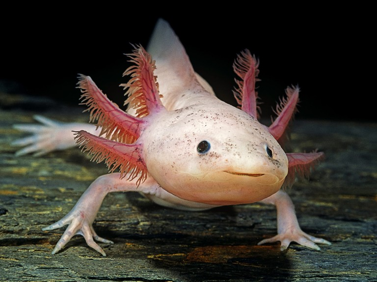

Mudkip
Mudkip, the Mud Fish Pokemon, is a water type starter based on an axolotl. By using the fin on its head, Mudkip can detect changes in air and water currents. Mudkip is a very docile Pokémon. Mudkip is more commonly found in captivity, though it can be found in swamps and other wetlands.

Axolotl
The axolotl is a salamander that only lives in the Valley of Mexico. Axolotls are unusual among amphibians in that they reach adulthood without undergoing metamorphosis. Instead of taking to the land, adults remain aquatic and gilled. Axolotls are critically endangered because of water pollution and the introduction of invasive fish species. Axolotls can regenerate their body parts. They eat worms, insects, and small fish.